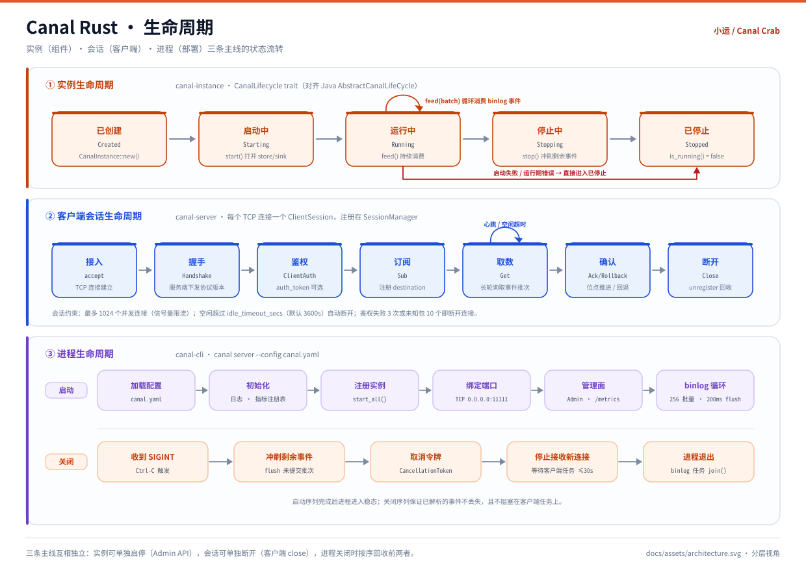

Project / 项目介绍
一条数据运河，
一只守闸的螃蟹。
Canal Rust 模拟 MySQL slave 的交互协议，向主库发送 dump 请求，接收并解析 binary log 事件， 再通过 protobuf 协议提供给下游消费者。它保留 Java Canal 的 wire protocol，把运行时换成了 Rust。
01 / OVERVIEW
把一条变更，
完整地送到下游。
MySQL 在上游不断产生变更，下游消费者随时可能跟不上。中间需要有人控制流量、 保存事件、提供确认。Canal Rust 把这件事拆成 14 个 crate，每一段都独立可测。
Canal Rust 不是另一个 CDC 产品，而是一次尽量克制的重写：协议不变，语义不变，只换实现。
14 个 crate 覆盖了一条完整的链路：接入 → 解析 → 过滤 → 存储 → 输出 → 消费确认。 对外保持与 Java 版 Canal 完全一致的 wire protocol，现有 Java / Go / Python / C# / Node.js 客户端零改动接入。
上游使用 mysql_cdc 连接 MySQL 5.1–8.0 与 MariaDB，支持 position 和 GTID 位点；
解析后的事件会经过正则过滤、环形缓冲、TCP 或 Kafka 输出，最终抵达消费者。
Rust 带来的不是更少的代码，而是更明确的所有权、更轻的运行时，以及一个可以被单独测试和替换的 crate 边界。14 个 crate 的依赖关系是单向的，宠物小运也因此有了一个稳定的落脚点。
02 / ARCHITECTURE
六层职责，
一条单向链路。
从 MySQL 到客户端或 Kafka，每个 crate 只做一件事。层与层之间通过明确的事件模型连接， 异常不会阻塞其余层级的优雅退出。

| 层 | Crate | 职责 |
|---|---|---|
| 接入 | canal-binlog | 连接 MySQL、拉取 binlog、转换为统一事件模型 |
| 处理 | canal-filter · canal-sink | 正则过滤库表，把事件扇出到多个出口 |
| 输出 | canal-store · canal-server · canal-connector | 环形缓冲存储、TCP 协议服务、Kafka 投递 |
| 编排 | canal-instance | 管理多个 destination，每个实例独占一条完整链路 |
| 运维 | canal-admin · canal-prometheus · canal-cli | 启停 API、指标暴露、命令行入口 |
| 基础 | canal-common · canal-proto · canal-meta | 类型 / 生命周期抽象、protobuf 生成、表结构缓存 |
MySQL Master
│ binlog dump (mysql_cdc)
▼
canal-binlog ──▶ canal-filter ──▶ canal-sink ──┬──▶ canal-store ──▶ canal-server ──▶ client
└──▶ canal-connector ──▶ Kafka
canal-instance 管理多个 destination；canal-admin / canal-prometheus 负责启停与指标。实例、会话、进程三条主线互相独立：任一层异常都不会阻塞其余层级的优雅退出。

03 / DECISIONS
每个选择，
都为了少一点意外。
协议兼容是硬约束，其他选择都围绕它服务：成熟的 CDC 库、纯 Rust 的 protobuf、 零外部依赖的 ring buffer，以及能被 tracing 和 Prometheus 看见的运行状态。
| 决策 | 选择 | 理由 |
|---|---|---|
| 协议兼容 | 复用 Canal .proto | 存量客户端零改动 |
| binlog 解析 | mysql_cdc crate | 成熟 CDC 库，支持 MySQL / MariaDB |
| 异步运行时 | tokio | Rust 生态标准 |
| 序列化 | prost + prost-build | 纯 Rust protobuf |
| 事件存储 | 自定义 ring buffer | 零外部依赖，基于 VecDeque |
| 配置 | serde_yaml | YAML，与 Java 版 properties 对标 |
| 日志 | tracing | 结构化日志，span-based |
| Web 框架 | axum | Admin API + Prometheus 端点 |
技术选型对照
| 组件 | Java Canal | Canal Rust |
|---|---|---|
| 语言 | Java 8 | Rust (stable) |
| 运行时 | JVM | Native binary (AOT) |
| 网络框架 | Netty 4.x | tokio + tokio-util codec |
| 序列化 | Protobuf 3 (java) | prost |
| Binlog | dbsync 自研 | mysql_cdc |
| 事件存储 | LMAX Disruptor | 自定义 ring buffer |
| DI 容器 | Spring 5 | 构造函数注入 |
| 配置 | Spring properties | serde_yaml |
| 日志 | Logback + SLF4J | tracing |
| SQL 解析 | Druid | sqlparser |
| 构建工具 | Maven | Cargo |
| 表达式引擎 | Aviator | regex |
mysql_cdc 0.2.1 未实现 TLS，只能以明文连接 MySQL；
认证插件仅支持 mysql_native_password 与 caching_sha2_password；
Admin API 默认只监听回环地址，容器或远程访问需显式配置 server.admin_bind。
完整说明见 功能迭代 · 已知边界。
04 / MASCOT
小运，
数据运河的闸官。
设计上没有把小运画成一只普通的螃蟹，而是把项目的职责直接画成了角色： 控制流量、保存事件、送达下游。十二种表情形态，则让它在不同页面里有点情绪。

小运的锈红色外壳对应 Rust；左钳拧着闸门水轮，决定放多少数据过去； 右钳托着一枚发光的事件，把变更送往下游。上游漂着一卷 binlog 日志，闸下的水里是 已经放行的数据包。脚下的运河，就是整条链路本身。
矢量原图只有一份：docs/assets/canal-pet.svg。它被 include_str!
编进二进制，所以改 SVG 就等于改运行时，不需要额外打包资源。
 笑
笑:emoji-smile: 欢乐
欢乐:emoji-joy: 哭
哭:emoji-cry: 沮丧
沮丧:emoji-depressed: 惊恐
惊恐:emoji-terrified: 愤怒
愤怒:emoji-angry: 撒娇
撒娇:emoji-coquettish: 卖萌
卖萌:emoji-cute: 讨好
讨好:emoji-pleasing: 敲打
敲打:emoji-knocking: 捂脸
捂脸:emoji-facepalm: 吐舌头
吐舌头:emoji-tongue:
12 种彩色动态形态：笑 / 欢乐 / 哭 / 沮丧 / 惊恐 / 愤怒 / 撒娇 / 卖萌 / 讨好 / 敲打 / 捂脸 / 吐舌头。
每个 SVG 自带表情、情绪特效与整体动效，并遵循 prefers-reduced-motion。
项目宠物、图片与表情为非开源视觉资产，商业使用需取得书面授权。
05 / SUPPORT
如果它帮你省了一点事。
代码部分遵循 Apache-2.0。项目宠物和视觉资产不在此列，版权归作者所有。 如果这条运河对你的项目有帮助，欢迎扫码支持一杯咖啡。